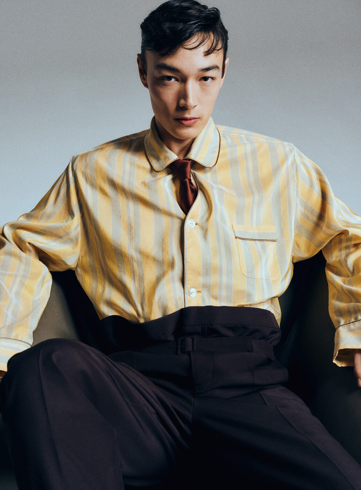

Something has shifted. After several seasons defined by restraint and reduction, the Spring/Summer 2026 collections have arrived with an unmistakable confidence — a willingness to reach for colour, texture, romance and a kind of liberated glamour that fashion has been circling for years without fully committing to. These are the twelve ideas that define the mood.
Begin with the surfaces. At Bottega Veneta, Louise Trotter opened her second season at the house with a collection built on bold, almost confrontational texture — panels of iridescent recycled fiberglass that caught the light like oil on water, developed in collaboration with the Venetian glass artist Laura Braggion, whose studio sits just minutes from the old Warhol Factory on Union Square. That connection is not incidental: Trotter is interested in what happens when artisanal tradition meets industrial material, and the result was pieces that felt simultaneously handmade and futuristic. Texture as provocation rather than decoration.
If Trotter’s textures were a statement about surface, Michael Rider at Celine offered an argument about sentiment. His charm bracelets — heavy, deliberate, hung with Triomphe monograms, tiny padlocks and hinged lockets — became the collection’s quiet obsession, appearing on nearly every look. They recalled the lucky charms that Parisian women once collected across decades, each piece marking a birthday, a love affair, a city. Rider understands that accessories can carry narrative weight, and these bracelets felt less like jewellery than like autobiography worn at the wrist.
Skin, silk and mythic cool
The 1990s slip dress has been resurrected so many times that its return should feel exhausted. It does not. Victoria Beckham showed hers in bias-cut ivory satin with lace borders so fine they dissolved against the skin. Tom Ford, in what may prove to be a defining moment for the relaunched house, sent out slips in heavy hammered silk that moved like liquid metal. At Wooyoungmi, Woo Youngmi herself offered the most austere interpretation: slips in matte black jersey, unadorned, relying entirely on cut. What unites all three is an understanding that the slip dress endures not because of nostalgia but because of its particular mythology — the Kate Moss mythology, the Carolyn Bessette mythology, the idea that a woman in a slip dress is not underdressed but rather operating at a level of confidence that renders everything else ornamental. Call it mythic cool.
Meanwhile, Sarah Burton’s Givenchy continues to sharpen into focus. Her Spring/Summer collection introduced the “Snatch” bag — a soft, curved shoulder piece with a clean architectural line that feels like it could define the next several seasons of handbag design. Burton has always understood structure, and here she applies it to accessories with the same precision she once brought to McQueen’s tailoring. The Snatch is not a logo bag, not a status symbol in the conventional sense; it is a shape, and the shape is very good.
From structure to its deliberate absence: pyjama dressing arrived this season not as novelty but as conviction. Anthony Vaccarello at Saint Laurent showed fluid silk sets in midnight navy and oyster white where trousers pooled at the ankle and shirts fell open at the collar, the entire silhouette suggesting a person who has just risen from the most glamorous bed in the world. Dries Van Noten offered its own interpretation in botanical prints, Dunhill brought the idea into menswear with exquisite restraint, and Dolce & Gabbana committed fully with lace-trimmed sets that blurred the line between boudoir and boulevard. Shapes that float rather than cling — this is dressing for a season that wants freedom above all.
The best collections this season draw on heritage without retreating into nostalgia — they remember everything and repeat nothing, and the result is a mood of liberated, optimistic romance.
The Splendid EditColour as conviction
Colour returned this season not tentatively but declaratively. At Ferragamo, Maximilian Davis built his collection around unbroken expanses of saturated pigment — canary yellow, deep fuchsia, electric cobalt — applied to columnar silhouettes in graphic silk that recalled 1920s poster design as much as contemporary fashion. Celine echoed the impulse with acid-bright accessories set against monochrome tailoring. Jil Sander and Loewe both offered their own studies in block colour, the former in architectural felt, the latter in bonded leather. What connects them is the conviction that colour is not accent but subject — that a coat in uninterrupted vermillion is a complete thought.
Within that broader chromatic confidence, one hue dominated: blue. Not navy, not the safe blues of corporate tailoring, but the profound, luminous blues of Fra Angelico frescoes — cerulean, lapis, ultramarine. IM Men showed an entire collection built around gradations of blue, from pale sky to midnight. Fendi, Tom Ford and Dolce & Gabbana all gravitated toward the same palette, while Peter Copping at Lanvin produced what may be the season’s single most beautiful garment: a floor-length coat in hand-dyed lapis silk that seemed to carry its own light source. Blue as devotion. Blue as a kind of secular faith.
Down at the feet, Loewe offered what feels like a genuine proposition for the new summer shoe: sculpted leather sandals in colours borrowed from Ellsworth Kelly — poppy red, canary, a green so saturated it vibrated against the skin. Jonathan Anderson has always understood that shoes are architecture at the smallest scale, and these pieces balanced visual wit with real wearability, their forms organic and almost biomorphic, as if they had been shaped by hand rather than drawn on a screen.

Saint Laurent SS26 — Photography courtesy of Wallpaper*
Silhouettes, spectacles and the great escape
If the season’s mood is freedom, its silhouette is layering — but not the pragmatic layering of transitional wardrobes. This is extreme, almost surreal layering, garments stacked and draped and wrapped until the body beneath becomes a suggestion rather than a fact. Zane Li at LII showed looks where coats enveloped tunics that enveloped shirts that enveloped vests, each layer visible at the edges, the effect architectural and faintly monastic. Issey Miyake took a more sculptural approach, its pleated fabrics creating volume that seemed to defy gravity. Julie Kegels, the Belgian designer whose star continues to rise, offered the most radical proposition: cocooned forms in recycled nylon that transformed the wearer into something between person and pavilion. These are not clothes for blending in.
Nor are the accessories. At Chanel, Matthieu Blazy delivered one of the most talked-about details of the season: shirts developed in collaboration with Charvet, the legendary Parisian shirtmaker. But these were not ordinary shirts. Blazy weighted the hems with fine chain, so that the fabric hung with an unusual gravity, the collar points pulling downward with quiet authority. The collaboration reaches back through Chanel history to Boy Capel, Coco Chanel’s great love, who was himself a Charvet client — and Blazy, characteristically, made the reference structural rather than sentimental. The shirt becomes a garment with memory built into its seams.
Elsewhere, eyewear became a statement unto itself. Miu Miu showed oversized goggle-like frames that covered half the face, lending every model the air of a particularly chic laboratory scientist. Loewe offered sculptural acetate pieces in clashing colours. Versace went maximum with embellished shields, while Balenciaga continued its exploration of extreme proportions with wraparound frames so large they functioned more as face architecture than as glasses. Standout specs are not new, but the unanimity of the gesture this season suggests that eyewear has become the accessory through which designers signal boldness most directly.
And finally, outerwear — vivid, unapologetic, designed for being seen. Prada showed lightweight parkas in shades of coral and chartreuse that recalled the bright jackets of 1960s Fire Island, all escapism and intention. Auralee offered its own quietly radical proposition: oversized coats in hand-dyed gradients that seemed to shift colour as the wearer moved. Dries Van Noten brought painterly brushstroke prints to trench coats, and Saint Laurent closed its show with a series of capes in saturated jewel tones — emerald, ruby, sapphire — that felt like the final word on the season’s chromatic ambition. These are coats that announce arrivals. They are coats for people who intend to be remembered.
Taken together, the twelve defining ideas of Spring/Summer 2026 describe a season that has chosen optimism. Not naïve optimism, not optimism that ignores complexity, but the kind of optimism that manifests as colour, as texture, as a willingness to dress with romance and freedom and a certain joyful excess. After years of minimalist austerity, fashion has decided to feel something again. The evidence is in the fiberglass and the charm bracelets, in the pooling silk pyjamas and the lapis coats, in the sculpted shoes and the weighted hems. Spring has arrived, and it intends to stay.